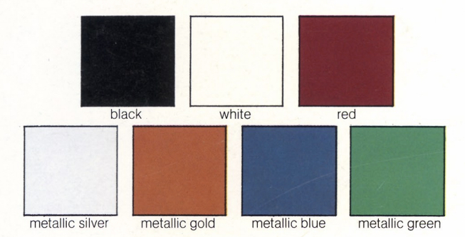

Colors

The /5 was the first BMW motorcycle to be marketed in a wide variety of colors in the United States. While its predecessors were available in an assortment of colors, it was the /5 that pushed the limits of the palette.
During the production run, BMW used Glasurit paint. You can still order Glasurit paint by these paint codes.
1970-1971 Paint Codes
| Color | Glasurit code |
|---|---|
| Black (schwarz) | #086 |
| Silver | #057 |
| White (feder weiss) | #O84 |
1972-1973 Paint Codes
| Color | Glasurit code |
|---|---|
| Black | #086 |
| Monza Blue Metallic | #539 |
| Silver (polaris) | #060 |
| Granada Red | #023 |
| Feder Weiss | #084 |
| Metallic Gold (also called "curry" in the U.S.) | #029 |
| Metallic Green | #074 |
Many European police forces used the R75/5 as well. Many were painted a color called "Authority Green" with
a Glasurit code of #067.
Touch-up Paint Part Numbers
| Color | Spray Paint | Touch-up Stick |
|---|---|---|
| Schwarz (black) | 51 91 1 825 475 | 51 91 1 813 070 |
| Granada Red | 51 91 1 825 460 | n/a |
| Feder Weiss | 51 91 1 828 511 | 51 91 1 232 144 |
| Polaris Silver | 51 91 1 851 637 | 51 91 1 851 625 |